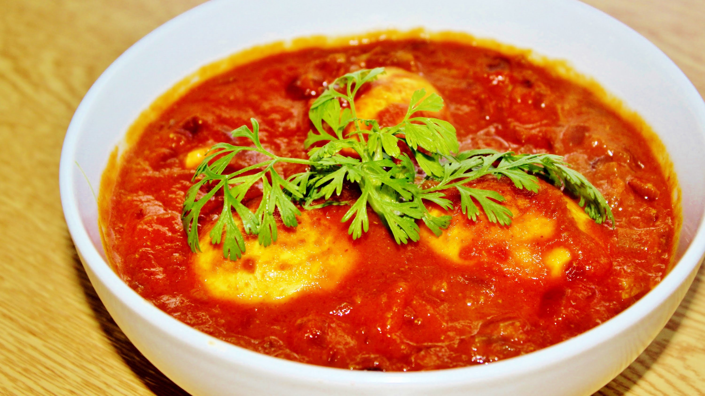

Ingredients:
1)4 Eggs (hard boiled)
2)1 onion
3)1/2 tomato (pureed)
4)3-4 flakes of garlic
5)1/2-inch piece of ginger
6)1-2 green chilies
7)2 tbsp chopped coriander leaves
8)Salt To Taste
9)Red chili powder to taste
10)3/4th tsp turmeric powder
11)1/2 tsp coriander powder
12)3/4 tsp garam masala
13)2-3 tbsp vegetable oil / ghee
14)1 cup green peas or 250 gms paneer
How to make Indian Egg Curry :
1)Remove the shell of boiled eggs & keep aside. If using Paneer cut into cubes and fry till golden & set aside for later use.
2)Make a paste of onion, garlic, ginger and green chilies in a mixer or chopper.
3)Heat oil in a kadhi or wok and add onion-garlic paste and fry till golden brown.
4)Add all the spices (salt, turmeric, coriander & chili powder) except garam masala and fry for a minute and add tomato puree. Fry till it starts leaving oil.
5)Add a cup of water and cook till it dry's.
6)Now add the fried paneer cubes or green peas (which ever using) and boiled eggs.
7)Add 1 cup of water and bring to boil and reduce the flame.
8)Simmer for 10 minutes.
9)Garnish egg curry with garam masala and coriander leaves and serve hot with paratha, roti or rice.